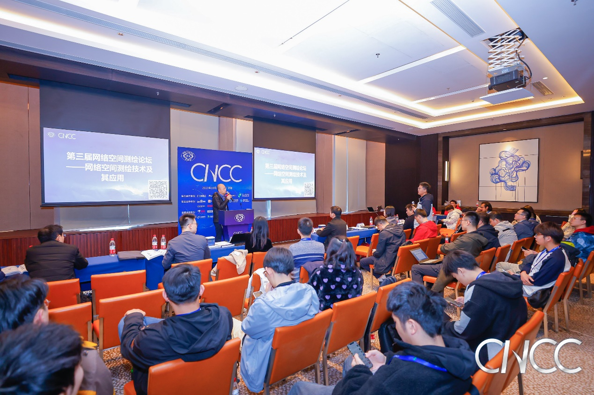

发布时间：2023年10月28日
本届论坛由中国科学院信息工程研究所工程三部副主任刘庆云正高级工程师和中国科学院信息工程研究所信息内容分析研究室副主任曹亚男研究员主持，邀请著名专家学者、企业主管等嘉宾出席，围绕“网络空间测绘技术及其应用”主题进行演讲，旨在研讨网络空间测绘的前沿技术与多领域应用，以推动网络空间测绘领域的技术交流与合作。

曹亚男研究员首先回顾了往届会议的基本情况，并指出网络空间已经成为人们生产、生活的第二类生存空间，也被认为是继陆、海、空、天之后的国家主权的第五空间。网络空间中蕴含着大量涉及国计民生的信息资产，如何更好地保护信息资产，了解信息资产的状态，对信息资产风险感知、信息安全评估来说尤为重要。
中国科学院地理科学与资源研究所特别研究助理陈帅，报告的题目是《网络空间地理学的理论与技术应用》。他表示，网络空间地理学是地理学从现实空间向网络空间的延伸，研究内容包括构建网络空间、现实空间的映射关系，构建网络空间可视化表达的语言、模型、方法体系，绘制网络空间地图，探究网络空间结构和行为的演变规律等。网络空间地理学的技术路径包括网络空间要素数据采集与融合、网络空间可视化表达、网络空间行为智能认知等。网络空间地理学将为网络空间的科学认知、地理学与网络空间安全交叉学科建设以及国家网络安全防护和全球网络空间治理提供新视角。
国防科技大学计算机学院教授蔡志平，报告的题目是《IPv6网络空间测绘关键技术》，他表示，IP网络正向IPv6+时代演进，使能数字经济。网络测绘在服务层面、管理层面、控制平面、数据层面都能发挥重要作用。IPv6的特性使得在IPv6空间完成网络测绘具有新的挑战。从IPv6网络的部署和分布、IPv6地址扫描等方面，对现有IPv6网络空间测绘技术进行了分析，对技术趋势进行了讨论和展望。
中国科学院信息工程研究所高级工程师于楠，报告的题目是《网络空间主动探测技术》，她表示，网络测绘技术的快速发展带动了基于测绘技术的新应用的不断涌现，而新应用也不断对测绘的精准度提出更高要求。此外还介绍了团队在网络空间主动探测方面的研究成果，包括指纹规则自动化生成、固件版本识别、物联网设备地标挖掘以及设备归属关系推断等关键技术。
清华大学网络科学与网络空间研究院副研究员李城龙，报告的题目是《基于流量分析的物联网设备智能管理及态势感知》，他表示，物联网技术是一类利用通信技术实现各种各样的终端系统和设施的互联互通，组成以物为核心的通信网络的技术的总称，其发展迅速，具有广阔的应用前景，但物联网设备的大量部署也为网络管理与安全带来了新的挑战。流量分析是实现物联网设备资产管理与安全监控的重要途径之一。我们的研究目标是持续感知网络中物联网设备的部署情况和运行状态，通过对物联网设备开展类型识别、状态监控、异常检测等研究，实现对物联网设备的智能管理，提高网络运行的稳定性与安全性。
华顺信安创始人、CEO赵武，报告的题目是《网络空间测绘在实战中的意义》，他表示，作为近年被安全圈高度关注的新兴技术，网络空间测绘的概念与价值已经被越来越多的企业组织所接受。真实场景中，网络空间测绘技术不仅能够帮助安全人员大幅提升效率，聚焦安全技术本身，同时也能帮助使用者“构建网络空间的攻击面地图”，让策略更有针对性。赵武先生从实战角度切入，阐述网络空间测绘的意义，前瞻这项技术应用在未来的进化发展方向。
会议气氛热烈高涨、思维全程碰撞，在四个小时的议程中，五位嘉宾畅所欲言，吸引了现场百余名观众驻足聆听，学术讨论交流氛围浓厚，数十次提问将每场讲座的气氛推向高潮，讲者画龙点晴的解答赢得一阵阵热烈的掌声。大家相约明年CNCC测绘论坛再见！